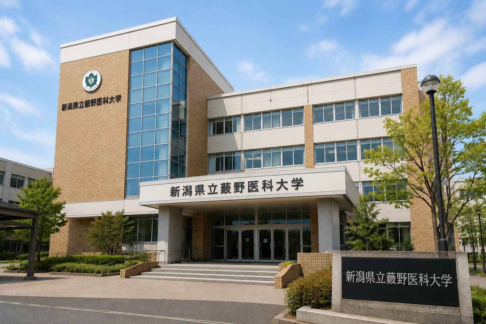

ようこそ、新潟県立藪野医科大学へ
当校は、確固たる自信と曖昧な診断力を持つ「プロのやぶ医者」を育成する日本唯一の専門機関です。
最新の医療設備よりも、患者を安心させる「笑顔」と「うなずき」を徹底的に学びます。

理事長からのご挨拶
「医学とは、信じる心である」
新潟県立藪野医科大学のホームページをご覧いただき、誠にありがとうございます。
本学は、「迷ったら、とりあえず湿布」の建学精神のもと、地域社会に貢献できる優秀なやぶ医者の育成に尽力してまいりました。
近年、医療はエビデンスベースドメディスン（EBM）を重視する傾向にあります。しかし、本学ではこれに加え、デトックスベースドメディスン（DBM）を推進しております。
足湯による重金属排出、気合による免疫力向上、謎の黒いシートを用いた毒素可視化技術など、既存の医学では捉えきれない可能性に挑戦しております。
また、本学ではワクチンに関する研究にも力を入れております。
私たちは「本当にそれは安全なのか」という素朴な疑問を忘れてはなりません。すでに接種された方に対しても、足湯・岩盤浴・波動水・深呼吸などを組み合わせた総合的なスパイクタンパク解毒プログラムの開発を進めております。
研究成果については現在査読中ですが、査読者からの返信が来ないため、実質的に反論不能であると考えております。
さらに本学では、患者様との信頼関係を何よりも重視しております。そのため診察の際には、お菓子の箱などを通じた心温まる交流文化を大切にしております。特に箱の底に添えられた感謝の気持ちは、医師と患者様との絆をより深いものにすると考えております。
教育面では、最新医療への過度な依存を戒めています。最先端技術は確かに魅力的です。しかし最先端とは諸刃の剣でもあります。
傷口には唾を。
発熱には気合を。
骨折には根性を。
そして、
「馬鹿は死んだら治るかも」
という挑戦的な精神を忘れてはなりません。
本学学生は、症状を見て3秒で「風邪ですね」と言い切る判断力、「様子を見ましょう」を6か月継続する忍耐力、そして説明が難しくなった際に専門用語を連発して煙に巻く技術を日々磨いております。
これからも新潟県立藪野医科大学は、医学と民間伝承の架け橋として、社会に必要とされる医療人材の育成に努めてまいります。
皆様の温かいご支援と、万が一の場合のご理解を賜りますようお願い申し上げます。
令和8年6月
新潟県立藪野医科大学
理事長 藪野 直感
最新のお知らせ
- 2026.06.01 - 「第1回 ごまかし方コンテスト」開催決定！
- 2026.05.15 - 夏期講習「風邪薬の処方術」の募集を開始しました。
- 2026.04.01 - 新入生歓迎会を行いました。